PORT ⭐ FOLIO
GAME DEVELOPER
BREAKING HEARTS
MUSE WITHIN
DIGITAL ARTIST
3D HALLOWEEN ART
Made with Blender
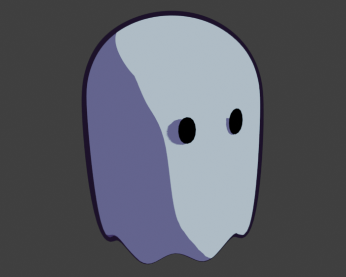
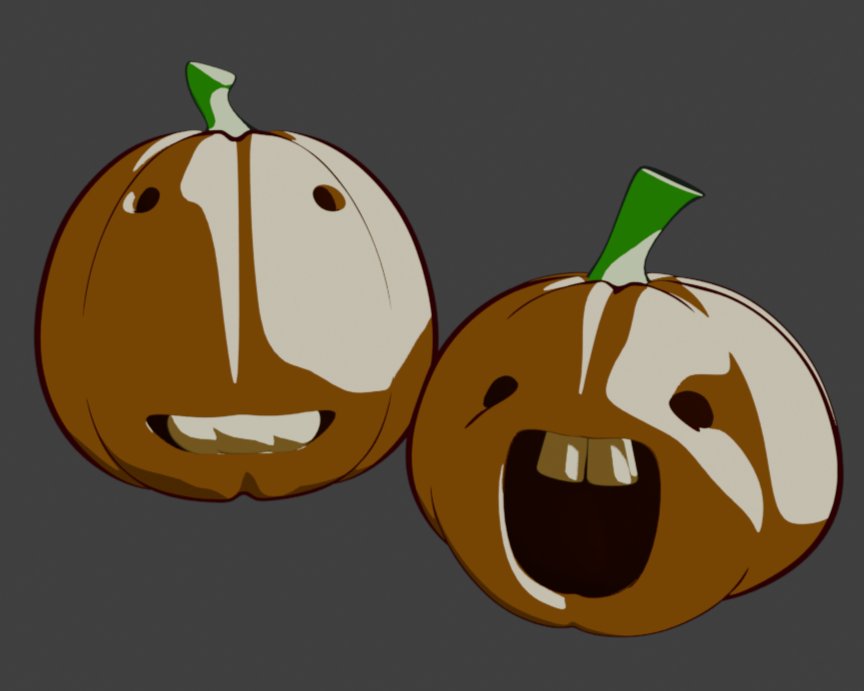
Nodes used for the texture shaders
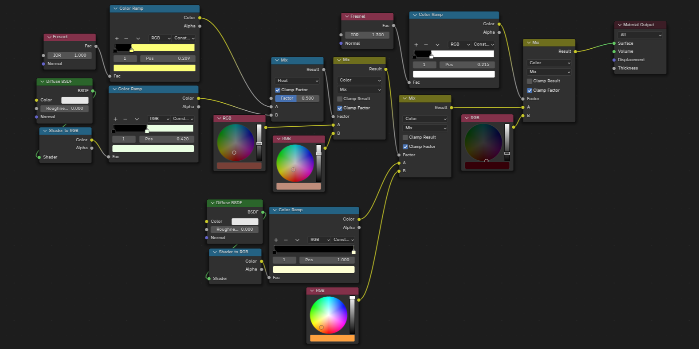
3D COFFEE MAKER ART
Made with Blender
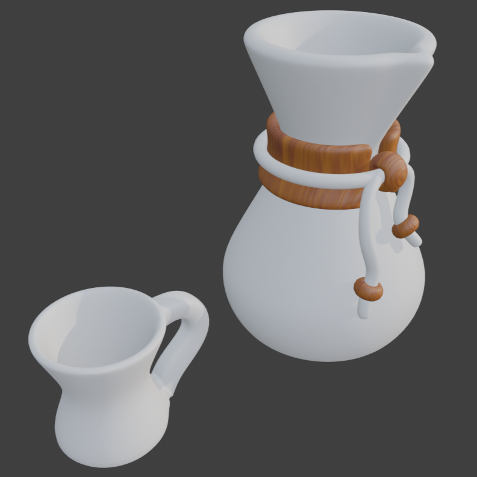
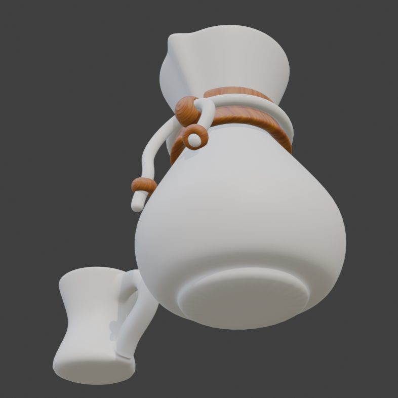
Nodes used for the texture shaders
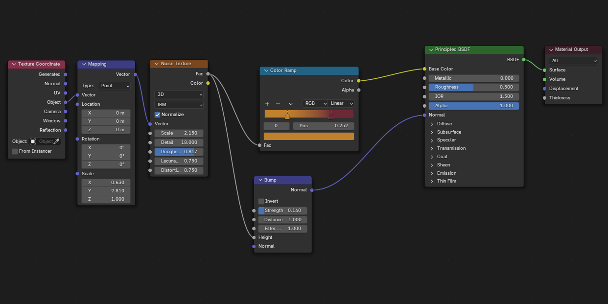
2.5D STRAWBERRY PLANT ART
Sprite sheet made with Aseprite
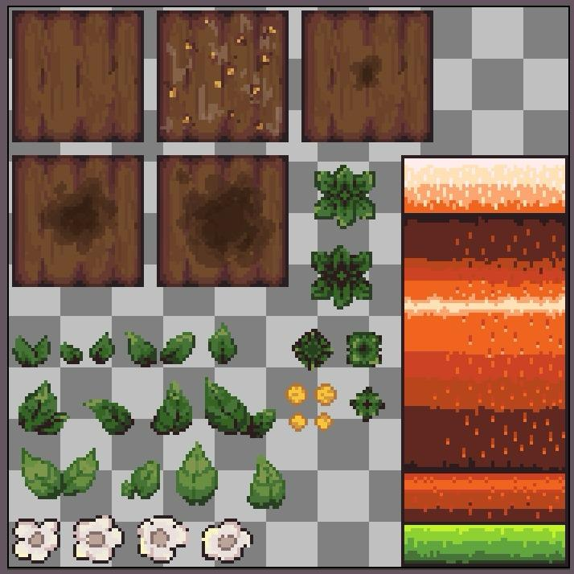
Model made with Blender
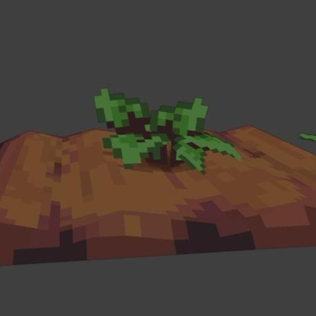
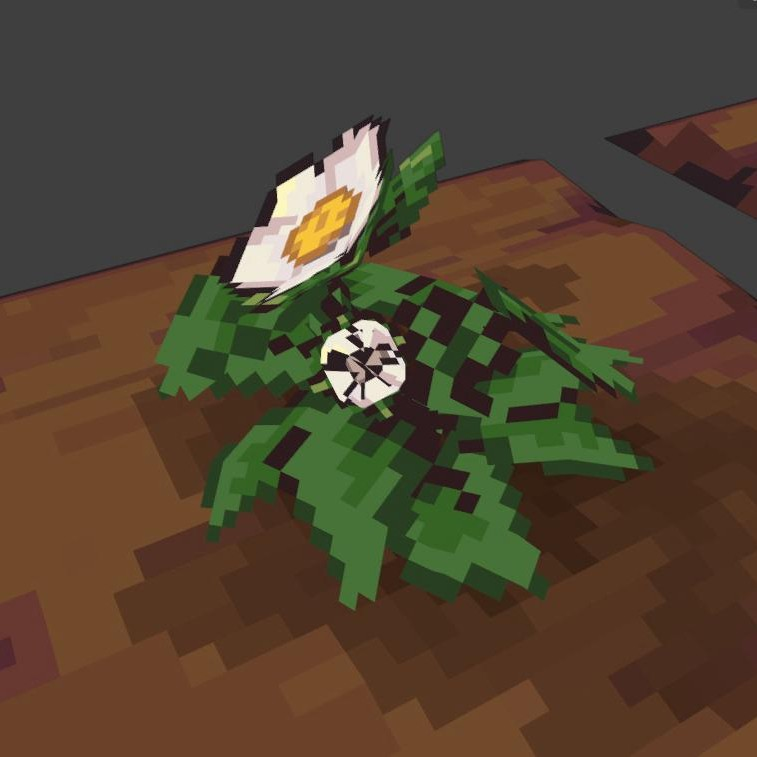
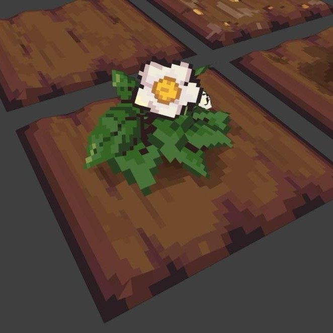
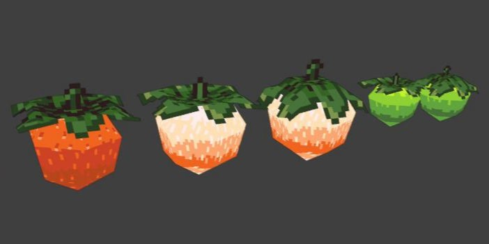
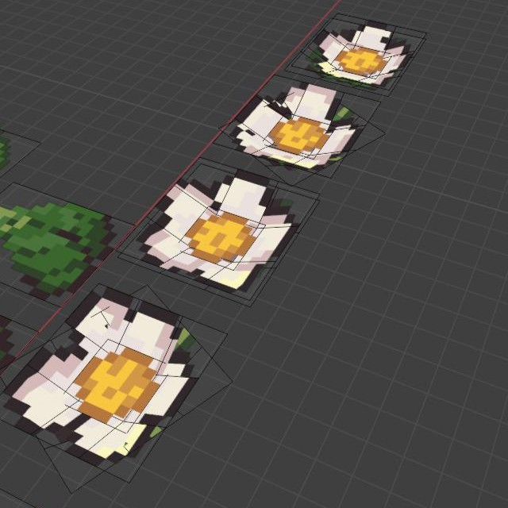
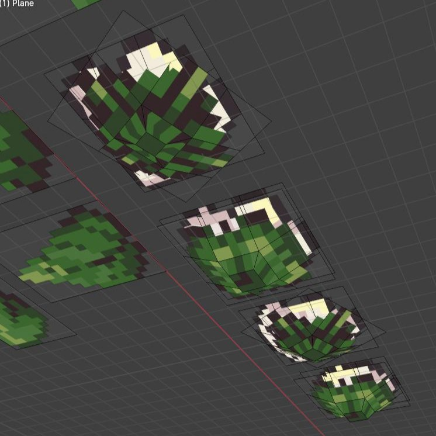
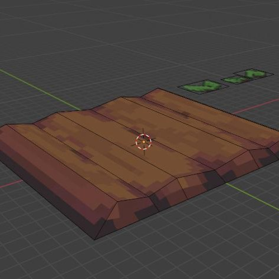